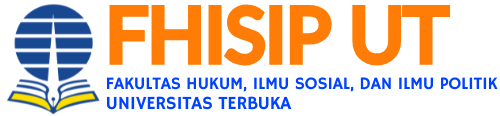

Mahasiswa Ilmu Hukum Universitas Terbuka
Menghubungkan Regulasi Digital dengan Praktik Teknologi dan Media Siber
Latar Belakang
Saya mahasiswa Ilmu Hukum Universitas Terbuka yang berbasis di Batam. Latar belakang saya menggabungkan studi hukum dengan ketertarikan pada cara kerja sistem digital, mulai dari pengelolaan data hingga distribusi konten di media siber.
Arah Belajar
Fokus saya adalah memahami bagaimana UU ITE dan UU PDP bekerja dalam praktik, bukan hanya di atas kertas. Saya mempelajari arsitektur media siber, tata kelola data, dan implikasi hukumnya, lalu mencoba menerapkannya dalam proyek kecil yang saya kelola sendiri.
Penerapan
Dalam praktik, saya menggunakan pemahaman ini untuk menilai kebijakan privasi platform digital, memeriksa kepatuhan penyelenggara sistem elektronik, dan menyusun rekomendasi yang mempertimbangkan keseimbangan antara kepastian hukum dan inovasi teknologi. Pendekatan ini saya anggap penting agar regulasi tidak tertinggal dari praktik teknologi yang terus bergerak.
Fondasi akademik saya dibangun dari tiga lapis: hukum publik dan privat, keterampilan advokasi, serta satu area riset yang sedang saya tekuni. Berikut fokus studi yang sedang saya kembangkan.
Kombinasi latar belakang hukum dan literasi teknis memungkinkan saya membaca persoalan siber dari dua sisi sekaligus: sebagai persoalan regulasi dan sebagai persoalan sistem. Berikut dua area yang saya tekuni.